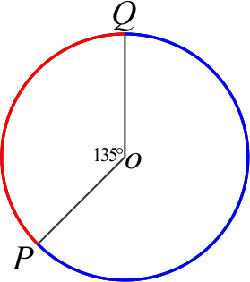
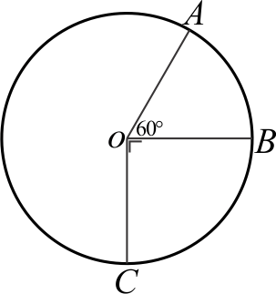

Lingkaran

\( Kelling = \pi \times 2r \)
\( Luas = \pi \times r^2 \)
Panjang Busur dan Luas Juring
Sudut Pusat dan Sudut Keliling
Pada sebuah lingkaran dapat dibuat berbagai sudut didalamnya, khususnya sudut yang mempunyai hubungan adalah sudut pusat lingkaran dan sudut keliling lingkaran yang menghadap busur yang sama. Sudut pusat adalah sudut yang terbentuk oleh 2 garis jari-jari, sedangkan sudut keliling adalah sudut yang terbentuk oleh 2 talibusur. Untuk memahaminya dapat diperhatikan gambar sebagai berikut.
gambar (i) merupakan sudut pusat yang menghadap busur \(AB\), sedangkan gambar (ii) merupakan sudut keliling yang menghadap busur \(PQ\). Sudut pusat dan sudut keliling akan memiliki hubungan apabila keduanya menghadap busur yang sama.
Pada gambar (iii) sudut pusat \(\angle AOB\) dan sudut keliling \(\angle AZB\) sama-sama menghadap busur \(AB\), kerena kedua sudut tersebut menghadap busur yang sama maka besar sudut keliling \(\angle AZB\) adalah setengah dari sudut pusat \(\angle AOB\), dengan kata lain besar sudut pusat adalah dua kali sudut keliling.
Sedangkan pada gambar (iv) sudut pusat \(\angle AOB\) dan sudut keliling \(\angle PZQ\) tidak menghadap busur yang sama, sudut pusat \(\angle AOB\) menghadap busur \(AB\), sedangkan sudut keliling \(\angle PZQ\) menghadap busur\(PQ\), maka keduanya tidak memiliki hubungan.
-
Keliling lingkaran yang memiliki jari-jari \(14cm\) adalah ....
Diket:
\(r=14cm\)
Jawab:\(K=\pi \times 2r\)
\(K= \frac{22}{7}\times 2\times 14cm\)
\(K=88cm\)
Jadi jawaban yang tepat adalah C.
-
Suatu lingkaran memiliki keliling \(11dm\) diameter lingkaran tersebut adalah ....
Diket:
Keliling \(=11dm = 110cm\)
Jawab:\(K=\pi \times d\)
\(110=\frac{22}{7}\times d\)
\(110\times \frac{7}{22}=d\)
\(d=\frac{7}{22}\times 110\)
\(d=35cm\)
Jadi jawaban yang tepat adalah C.
-
Jari-jari lingkaran yang memiliki luas \(706,5cm^2\) adalah ....
Diket:
Luas \(=706,5cm^2\)
Jawab:
Luas\(=\pi \times r^2\)
\(706,5=3,14 \times r^2\)
\(\frac{706,5}{3,14}=r^2\)
\(r^2=\frac{706,5}{3,14}\)
\(r^2=225\)
\(r=\sqrt{225}\)
\(r=15cm\)
Jadi jawaban yang tepat adalah C.
-

Luas bangun di atas adalah ....
Diket:
\(r=7cm\)
besar sudut \(90^\circ\)
Jawab:
Luas juring\(=\frac{90^\circ}{360^\circ} \times\) luas lingkaran
\(=\frac{90^\circ}{360^\circ} \times \pi \times r^2\)
\(=\frac{90^\circ}{360^\circ} \times \frac{22}{7} \times 7^2\)
\(=\frac{\cancel{90^\circ}1}{\cancel{360^\circ}4} \times \frac{22}{\cancel{7}1} \times \cancel{49}7\)
\(=38,5cm^2\)
Jadi jawaban yang tepat adalah B.
-

Luas bangun di atas adalah ....
Diket:
\(r=42cm\)
besar sudut \(=360^\circ - 90^\circ\)
\(=270^\circ\)
Jawab:
Luas juring\(=\frac{270^\circ}{360^\circ} \times\) luas lingkaran
\(=\frac{270^\circ}{360^\circ} \times \pi \times r^2\)
\(=\frac{270^\circ}{360^\circ} \times \frac{22}{7} \times 42^2\)
\(=\frac{\cancel{270^\circ}3}{\cancel{360^\circ}4} \times \frac{22}{\cancel{7}1} \times \cancel{1.764}252\)
\(=4.158cm^2\)
\(4.158cm^2 = 41,58dm^2\)Jadi jawaban yang tepat adalah A.
-
Luas lingkaran yang memiliki keliling \(44cm\) adalah ....
Diket:
\(Keliling=44cm\)
Jawab:
\(Luas=\pi \times r^2\)
\(Keliling=\pi \times 2r\)
\(44=\frac{22}{7}\times 2r\)
\(44\times \frac{7}{22}=2r\)
\(14=2r\)
\(frac{14}{2}=r\)
\(7=r\)
\(r=7\)
\(Luas=\pi \times r^2\)
\(Luas=\frac{22}{7} \times 7^2\)
\(Luas=\frac{22}{7} \times 49\)
\(Luas=154cm^2\)
Jadi jawaban yang tepat adalah B.
-
Luas juring \(POQ\) adalah \(117,75cm^2\), jika \(\angle POQ=60^\circ\) maka diameter lingkaran tersebut adalah ....
Diket:
L. juring \(POQ=117,75 cm^2\)
\(\angle POQ=60^\circ\)
Jawab:
\(L. juring\) \(POQ=\frac{\angle POQ}{360^\circ} \times L.lingkaran\)
\(117,75=\frac{\cancel {60^\circ}1}{\cancel {360^\circ}6} \times L.lingkaran\)
\(117,75\times \frac{6}{1} = L.lingkaran\)
\(L.lingkaran = 117,75\times \frac{6}{1}\)
\(L.lingkaran = 706,5\)
\(\pi \times r^2 = 706,5\)
\(3,14 \times r^2 = 706,5\)
\(r^2 = \frac {706,5}{3,14} \)
\(r^2 = 225 \)
\(r = \sqrt{225} \)
\(r = 15cm \)
\(d=2r\)
\(r=2\times 15cm\)
\(r=30cm\)
\(r=3dm\)
Jadi jawaban yang tepat adalah D.
-
(i)
Luas bangun yang diarsir adalah ....
Diket:
\(r=3,5 cm^2\)
terdapat 2 tembereng.
Jawab:
\(L.tembereng=L.juring-L.segitiga\)
\(=(\frac{\angle juring}{360^\circ}\times \pi r^2)-(\frac{a\times t}{2})\)
\(=(\frac{90^\circ}{360^\circ}\times \frac{22}{7} \times 3,5^2)-(\frac{3,5\times 3,5}{2})\)
\(=(\frac{\cancel{90^\circ}1}{\cancel{360^\circ}4}\times \frac{22}{7} \times 12,25)-(\frac{12,25}{2})\)
\(=(9,625)-(6,125)\)
\(L.tembereng=3,5cm^2\)
\(L.2tembereng=3,5cm^2\times 2\)
\(L.2tembereng=7cm^2\)
Jadi jawaban yang tepat adalah D.
-
Jika \(\angle ABC=60^\circ\), maka besar \(\angle AOC\) adalah ....
Diket:
besar sudut keliling \(\angle ABC=60^\circ\)
Jawab:
\(\angle pusat= 2\times \angle keliling\)
\(\angle AOC= 2\times \angle ABC\)
\(\angle AOC= 2\times 60^\circ \)
\(\angle AOC= 120^\circ \)
Jadi jawaban yang tepat adalah C.
-
Jika diameter lingkaran \(=30cm\) maka panjang busur \(AB\) adalah ....
Diket:
diameter \(=30cm\)
Jawab:
busur AB \(=\frac{\angle AOB}{360^\circ}\times Kel.\odot\)
busur AB \(=\frac{120^\circ}{360^\circ}\times \pi d\)
busur AB \(=\frac{\cancel{120^\circ}1}{\cancel{360^\circ}3}\times 3,14\times 30\)
busur AB \(=\frac{1}{3}\times 94,2\)
busur AB \(=31,4cm\)
Jadi jawaban yang tepat adalah A.
-
Panjang busur \(AB\) kecil (merah) adalah \(26,4cm\), dengan besar sudut \(72^\circ\), panjang busur \(AB\) besar adalah ....
Diket:
busur \(AB\) kecil \(=24,6cm\)
Jawab:
\(\frac{\angle AOB kecil}{busur\;AB\;kecil}=\frac{\angle AOB besar}{busur\;AB\;besar}\)
\(\frac{72^\circ}{26,4}=\frac{360^\circ - 72^\circ}{busur\;AB\;besar}\)
\(\frac{72^\circ}{26,4}=\frac{288^\circ}{busur \;AB \;besar}\)
\(busurAB\;besar=\frac{288\times 26,4}{72}\)
\(busurAB\;besar=105,6cm\)
Jadi jawaban yang tepat adalah B.
-
Diketahui luas juring \(AOB=314cm\), maka panjang busur \(BC\) adalah ....
Diket:
Luas juring \(AOB\) \(=314cm^2\)
\(\angle AOB=40^\circ\)
Jawab:
\(busur\;BC=\frac{\angle BOC}{360^\circ}\times K.\odot\)
cari jari-jari terlebih dahulu.
Luas juring \(AOB=\frac{40^\circ}{360^\circ}\times L.\odot\)
\(314=\frac{\cancel{40^\circ}1}{\cancel{360^\circ}9}\times 3,14\times r^2\)
\(314=\frac{3,14}{9}\times r^2\)
\(314 \times \frac{9}{3,14}=r^2\)
\(900=r^2\)
\(r^2=900\)
\(r=\sqrt{900}\)
\(r=30cm\)
\(busur\;BC=\frac{\angle BOC}{360^\circ}\times K.\odot\)
\(busur\;BC=\frac{180^\circ-40^\circ}{360^\circ}\times \pi 2r\)
\(busur\;BC=\frac{180^\circ-40^\circ}{360^\circ}\times 3,14\times 2\times 30\)
\(busur\;BC=\frac{\cancel{140^\circ}7}{\cancel{360^\circ}18}\times 188,4\)
\(busur\;BC=73,26cm\)
Jadi jawaban yang tepat adalah C.
-
Jika panjang \(AB=15cm\), maka luas daerah yang diarsir adalah ....
Diket:
Karena panjang \(AB=15cm\), maka jari-jari lingkaran \(\frac{15}{3}=5cm\).
\(AC=2\times 5cm\)
\(AC=10cm\)
Jawab:
\(L.arsiran=(L. \;\square) - (L. \frac{1}{4} \odot \times 4)\)
\(L.arsiran=(L. \;\square) - (L. \odot)\)
\(L.arsiran=(AB\times AC) - (\pi \times r^2)\)
\(L.arsiran=(15\times 10) - (3,14 \times 5^2)\)
\(L.arsiran=150 - 78,5\)
\(L.arsiran=71,5cm^2\)
Jadi jawaban yang tepat adalah B.
-
Diketahui panjang busur \(PQ\) yang memiliki sudut pusat dititik \(o\) sebesar \(135^\circ\) adalah \(47,1cm\). maka panjang busur \(PQ\) lainnya adalah ....
Diket:
\(\angle POQ=135^\circ\)
busur \(PQ=47,1cm\)
Jawab:
Jika digambarkan kurang lebih seperti di bawah ini. panjang busur \(PQ\) (merah) \(=47,1cm\).
Busur \(PQ\) lainnya yaitu busur yang berwarna biru.
Busur \(PQ\) lainnya (biru) \(=\)
\(=\frac{\angle POQ \; lainnya}{360}\times kel. \odot\)
\(=\frac{360-135}{360}\times kel.\odot\)
untuk itu, cari keliling terlebih dahulu
\(busur \; PQ=\frac{\angle POQ}{360^\circ}\times kel.\odot\)
\(47,1=\frac{\cancel{135^\circ}3}{\cancel{360^\circ}8}\times kel. \odot\)
\(47,1\times \frac{8}{3}=kel \odot\)
\(kel \odot=47,1\times \frac{8}{3}\)
\(kel \odot=125,6 cm\)
Busur \(PQ\) lainnya (biru) \(=\)
\(=\frac{360-135}{360}\times kel.\odot\)
\(=\frac{225}{360}\times 125,6\)
\(=78,5cm\)Jadi jawaban yang tepat adalah B.
-
Jika panjang busur \(AC\) besar \(77cm\), maka panjang busur \(AB\) adalah....
Diket:
\(busur ;\ AC=77cm\)
\(\angle AOB=60^\circ\)
\(\angle BOC=90^\circ\)
Jawab:
\(\angle AOC besar=360^\circ-(60^\circ+90^\circ)\)
\(\angle AOC besar=360^\circ-150^\circ\)
\(\angle AOC besar=210^\circ\)
sebelum mencari panjang busur \(BC\) terlebih dahulu mencari kelilingnya.
busur \(AC\) besar=\(=\frac{\angle AOC besar}{360^\circ}\times kel \odot\)
\(77=\frac{\cancel{210^\circ}7}{\cancel{360^\circ}12} \times kel \odot\)
\(77\times \frac{12}{7}=kel \odot\)
\(Kel \odot =77\times \frac{12}{7}\)
\(Kel \odot=132cm\)
\(busur AB=\frac{\angle AOB}{360^\circ}\times kel\odot\)
\(busur AB=\frac{\cancel{60^\circ}1}{\cancel{360^\circ}6}\times 132\)
\(busur AB=22cm\)
Jadi jawaban yang tepat adalah D.
-
Nilai dari \(x\) adalah....
Diket:
sudut pusat \(\angle AOC=180^\circ\)
Jawab:
\(\angle \; keliling ABC=\frac{1}{2}\angle pusat AOC\)
\(6x=\frac{1}{2}\times 180^\circ\)
\(6x=90^\circ\)
\(x=\frac{90}{6}\)
\(x=15\)
Jadi jawaban yang tepat adalah B.
-
Nilai dari \(x\) adalah....
Diket:
\(\angle A=80^\circ\)
\(\angle C=(2x+30)^\circ\)
Jawab:
\(\angle A+ \angle C=180\)
\(80^\circ + (2x+30)^\circ = 180^\circ\)
\(80^\circ + 2x + 30^\circ = 180^\circ\)
\(110^\circ + 2x = 180^\circ\)
\( 2x = 180^\circ - 110^\circ\)
\( 2x = 70^\circ\)
\( x = \frac{70^\circ}{2}\)
\( x = 35^\circ\)
Jadi jawaban yang tepat adalah A.
-
Jika diketahui \(\angle QPR=50^\circ\), maka besar \(\angle OQR\) adalah....
Diket:
sudut keliling \(\angle QPR = 50^\circ\)
Jawab:
sudut pusat \(\angle QOR=2\times \angle QPR\)
\(\angle QOR=2\times 50^\circ\)
\(\angle QOR=100^\circ\)
karena \(QOR\) merupakan segitiga sama kaki, dengan \(\angle QOR=100^\circ\), maka \(\angle OQR = \angle ORQ\).
\(\angle QOR + 2 \angle OQR = 180^\circ \)
\(100^\circ + 2\times \angle OQR = 180^\circ \)
\(2\times \angle OQR = 180^\circ - 100^\circ \)
\(2\times \angle OQR = 80^\circ\)
\(\angle OQR = \frac{80^\circ}{2}\)
\(\angle OQR = 40^\circ\)
Jadi jawaban yang tepat adalah A.
-
Jika \(\triangle ABC\) adalah segitiga sama kaki, maka luas daerah yang diarsir adalah....
Diket:
panjang sisi \(\triangle ABC=14cm\)
\(\angle A = \angle B = \angle C = 60^\circ\)
misalkan terdapat titik bantu \(R\), dimana garis tingginya adalah \(CR\)
Jawab:
\(area\;arsir=L\triangle - L.3juring\)
untuk mengetahui luas segitiga, harus tahu tinggi dari segitiga. (dengan menggunakan pythagoras)
\(st^2=sm^2-sl^2\)
\(CR^2=BC^2-BR^2\)
\(CR^2=14^2-7^2\)
\(CR^2=196-49\)
\(CR^2=147\)
\(CR=\sqrt{147}\)
\(CR=7\sqrt{3}\)
\(L\triangle=\frac{a\times t}{2}\)
\(L\triangle=\frac{AB\times CR}{2}\)
\(L\triangle=\frac{14\times 7\sqrt{3}}{2}\)
\(L\triangle=49\sqrt{3} cm^2\)
\(L.3juring:\)
\(3\times \frac{60^\circ}{360^\circ}\times L.\odot\)
\(3\times \frac{60^\circ}{360^\circ}\times \pi r^2\)
\(3\times \frac{60^\circ}{360^\circ}\times \frac{22}{7}\times 7^2\)
\(3\times \frac{\cancel{60^\circ}1}{\cancel{360^\circ}6}\times \frac{22}{\cancel{7}1}\times \cancel{49}7\)
\(77cm^2\)
\(area\;arsir=L\triangle - L.3juring\)
\((49\sqrt{3}-77)cm^2\)
Jadi jawaban yang tepat adalah D.
-
Luas daerah yang diarsir adalah....
Diket:
\(r=30cm\)
Jawab:
Misalkan terdapat titik bantu \(O, A, B\) dan \(C\).
\(L.area\;arsir=6\times tembereng\)
\(L.tembereng=L.juring-L.\triangle\)
Setiap segitiga adalah segitiga sama sisi. maka besar sudut pusat setiap segitiga \(60^\circ\)
\(L.juring=\frac{60^\circ}{360^\circ}\times L\odot\)
\(L.juring=\frac{\cancel{60^\circ}1}{\cancel{360^\circ}6}\times \pi r\)
\(L.juring=\frac{1}{6}\times 3,14 \times 30^2\)
\(L.juring=\frac{1}{6}\times 3,14 \times 900\)
\(L.juring=\frac{1}{6}\times 2.826\)
\(L.juring=471cm^2\)
\(L\triangle = \frac{BO\times AC}{2}\)
untuk mendapatkan nilai \(BO\) dapat menggunakan segitiga siku-siku istimewa.
\(\frac{\sqrt{3}}{2} = \frac{BO}{CO}\)
\(\frac{\sqrt{3}}{2} = \frac{BO}{30}\)
\(BO=\frac{30\sqrt{3}}{2}\)
\(BO=15\sqrt{2}\)
\(L\triangle = \frac{15\sqrt{2}\times 30}{2}\)
\(L\triangle = 225\sqrt{2} cm^2\)
\(L.tembereng=471cm^2 - 225\sqrt{2} cm^2\)
Jadi jawaban yang tepat adalah C.